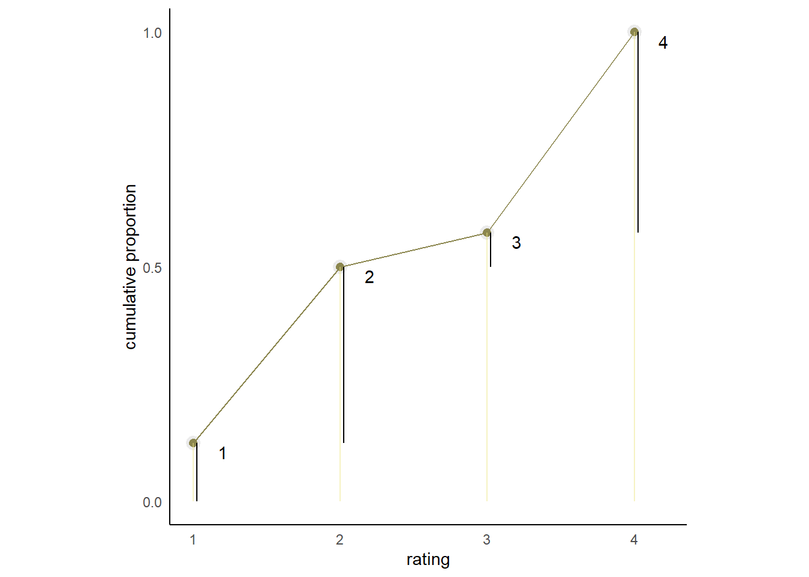
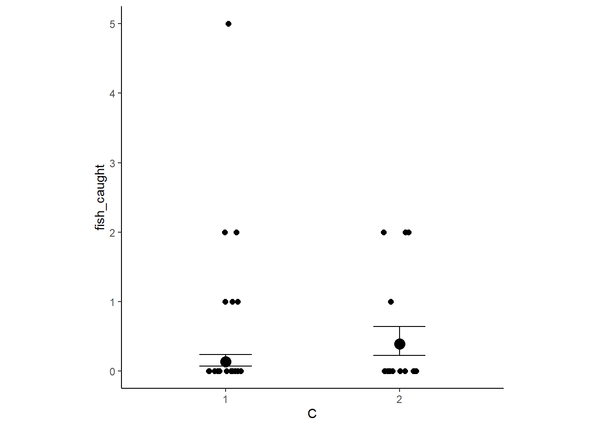
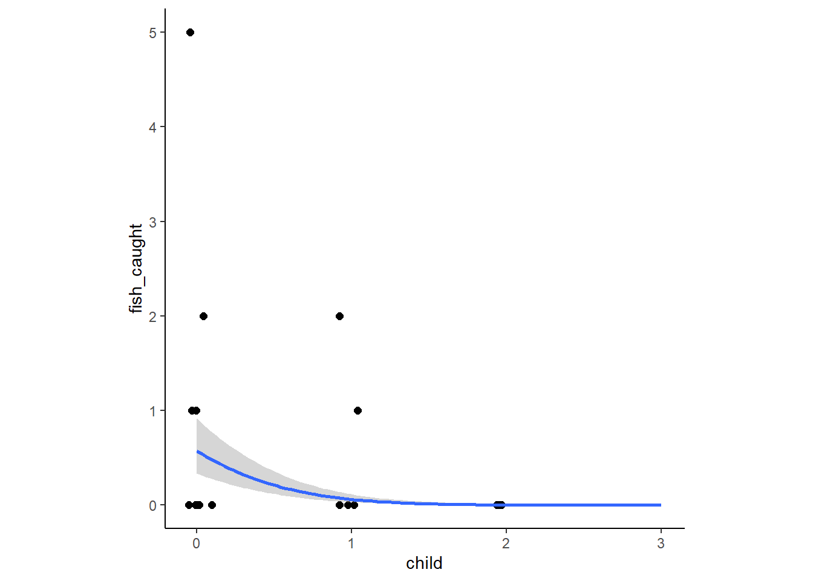
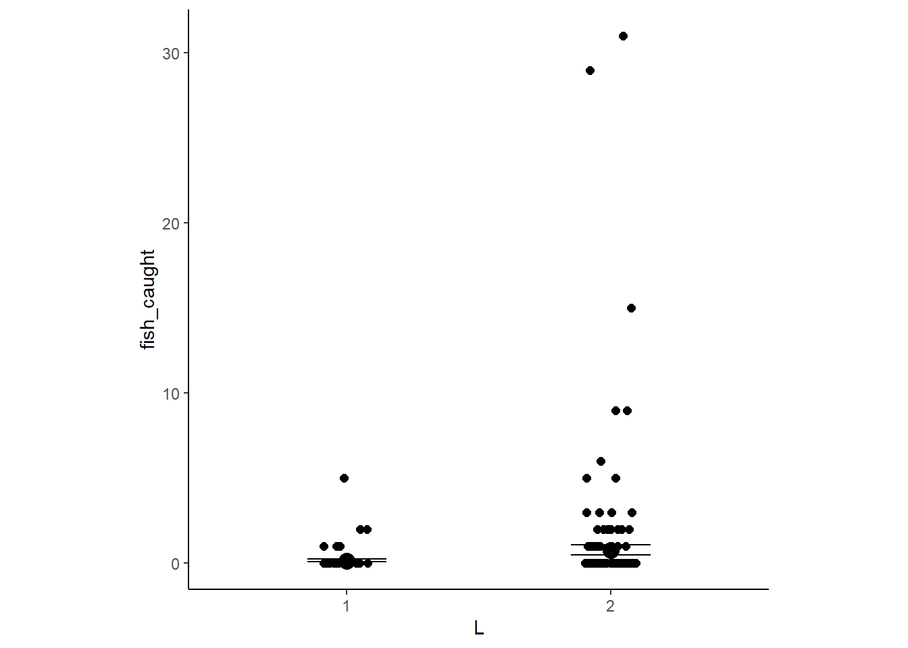
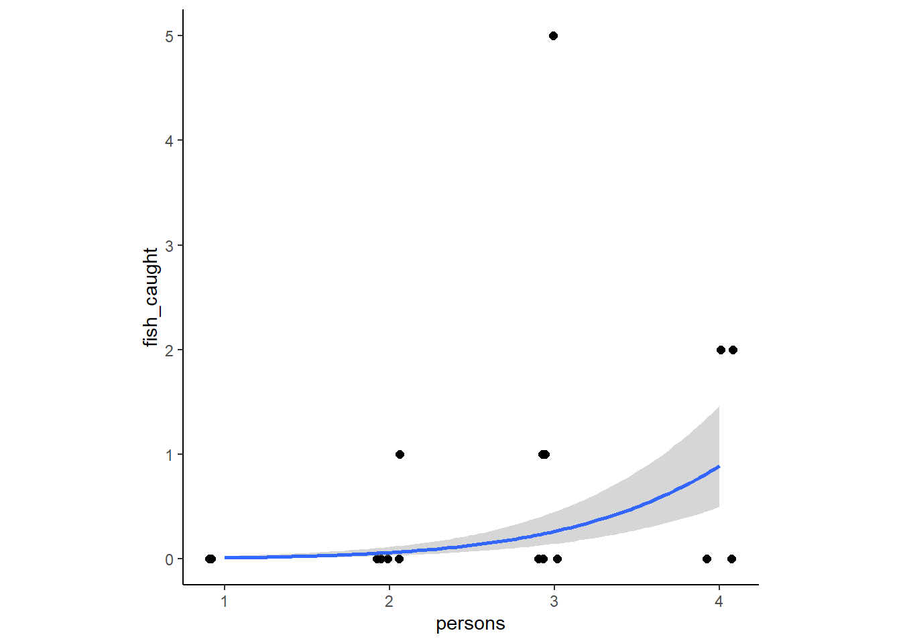
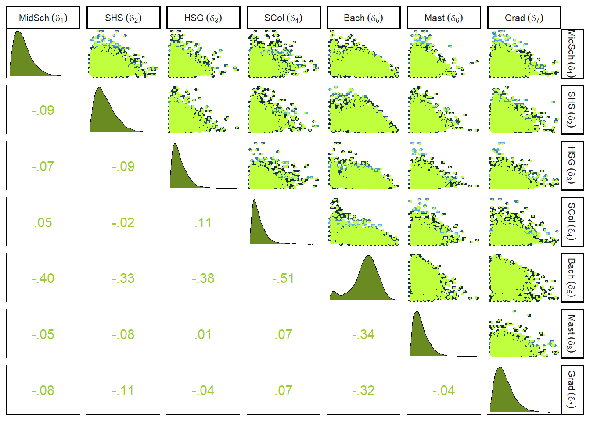

12 Monsters and Mixtures
12.1 Over-dispersed counts
現実のデータは様々な過程がミックスされて生成されることがあるため、理想的な分布よりも幅が広くなることがある。二項分布やポワソン分布では平均と分散が1つのパラメータで表されるため、これがおきやすい。例えば、二項分布の期待値が\(Np\)であれば、その分散は\(Np(1-p)\)となり、ポワソン分布の平均と分散は同じ\(\lambda\)である。 本節では、continuous mixtureモデルと呼ばれるものを扱う。これでは、観察そのものではなく、観察の分布に対して線形モデルが適用される。実際上は、より柔軟なモデリングができる階層モデルを用いる方が過分散への対処は簡単である。
12.1.1 Beta binomial.
ベータ二項分布は、二項分布の混合分布であり、それぞれのカウントに対する確率が推定される。また、それぞれのカウントが得られる確率も共通のベータ分布から得られると仮定する。ここでは、UCバークレーの入試結果の例を再び用いて例を見ていく。
ベータ分布は、平均確率\(\bar{p}\)とshape parameterの\(\theta\)の2つのパラメータで定義される。\(\theta\)は分布の広さに関するパラメータで、\(\theta\)が2のときに一様分布になる。\(\theta\)が2以上になると分布は狭くなり、\(\theta\)が2以下になると0と1に分布が集中していく。なお、通常ベータ分布は\(\alpha\)と\(\beta\)を用いて、
\[
Beta(y|\alpha, \beta) = \frac{y^{\alpha-1} (1-y)^{\beta-1}}{B(\alpha, \beta)}
\]
で表される（テキストの\(\bar{p}\)と\(\theta\)は\(\alpha\)と\(\beta\)とは一致していない）。\(\bar{p} = \frac{\alpha}{\alpha + \beta}\)、\(\theta = \alpha + \beta\)であるので、\(\alpha = \bar{p} \theta\)、\(\beta = \theta(1-\bar{p})\) で表せる。
## p,Θからα、βを得る関数。
transbeta <- function(p, theta) {
if (p <= 0 | p >= 1) stop("must have 0 < p < 1")
if (theta <= 0) stop("theta must be > 0")
a <- p * theta
b <- (1.0 - p) * theta
return(list(a = a, b = b))
}
transbeta(0.5, 0.5)## $a
## [1] 0.25
##
## $b
## [1] 0.25様々なベータ分布を書いてみる（図12.1）。
crossing(p = c(0.25, 0.5, 0.75),
theta = c(0.5,2,5,15,30)) %>%
tidyr::expand(nesting(p,theta), x = seq(0,1,length.out=50)) %>%
mutate(density = dbeta2(x, p, theta),
mu = str_c("mu == ", p %>% str_remove(.,"0")),
kappa = factor(str_c("kappa == ", theta),
levels = c("kappa == 30",
"kappa == 15", "kappa == 5", "kappa == 2", "kappa == 0.5")))%>%
ggplot(aes( x=x, y = density))+
geom_area(fill = "navy")+
scale_x_continuous("probability space",
breaks = c(0, .5, 1),
labels = c("0", ".5", "1")) +
scale_y_continuous(NULL, labels = NULL) +
theme(axis.ticks.y = element_blank()) +
facet_grid(kappa ~ mu, labeller = label_parsed)図12.1: 様々なパラメータのベータ分布
それでは、モデリングを行う。モデル式は以下の通り。\(\theta\)を2以上にするために工夫がしてある。
\[
\begin{aligned}
A_{i} &\sim BetaBinomial(N_{i}, \bar{p_{i}}, \theta)\\
logit(\bar{p_{i}})& = \alpha_{GID_{[i]}}\\
\alpha_{j} &\sim Normal(0,1.5)\\
\theta &= \phi +2\\
\phi &\sim Exponential(1)
\end{aligned}
\]
data("UCBadmit")
d <- UCBadmit %>%
mutate(gid = ifelse(applicant.gender == "male","1","2"))brmsパッケージはβ二項分布を実装していないので、自作する必要がある。
beta_binomial2 <- custom_family(
"beta_binomial2", dpars = c("mu", "kappa"),
links = c("logit", "log"), lb = c(NA, 2),
type = "int", vars = "vint1[n]"
)
stanvars <- stanvar(scode = "
real beta_binomial2_lpmf(int y, real mu, real kappa, int T) {
return beta_binomial_lpmf(y | T, mu * kappa, (1 - mu) * kappa);
}
int beta_binomial2_rng(real mu, real kappa, int T) {
return beta_binomial_rng(T, mu * kappa, (1 - mu) * kappa);
}
",
block = "functions")それでは、モデルにフィットさせる。
b12.1 <-
brm(data = d,
family = beta_binomial2, # here's our custom likelihood
admit | vint(applications) ~ 0 + gid,
prior = c(prior(normal(0, 1.5), class = b),
prior(exponential(1), class = kappa)),
iter = 2000, warmup = 1000, cores = 4, chains = 4,
stanvars = stanvars, # note our `stanvars`
seed = 12,
file = "output/Chapter12/b12.1")結果は以下の通り（表\(\ref{res-b12-1}\)）。
posterior_samples(b12.1) %>%
data.frame() %>%
mutate(diff = b_gid1 - b_gid2) %>%
pivot_longer(-lp__) %>%
group_by(name) %>%
mean_qi(value, .width=0.89) %>%
kable(booktabs =T,
digits=2,
caption = "b12.1の結果果",
align = "lcccccc") %>%
kable_styling(latex_options = c("striped", "hold_position"))| name | value | .lower | .upper | .width | .point | .interval |
|---|---|---|---|---|---|---|
| b_gid1 | -0.43 | -1.13 | 0.22 | 0.89 | mean | qi |
| b_gid2 | -0.33 | -0.96 | 0.31 | 0.89 | mean | qi |
| diff | -0.11 | -1.06 | 0.82 | 0.89 | mean | qi |
| kappa | 3.04 | 2.10 | 4.51 | 0.89 | mean | qi |
| lprior | -3.83 | -5.30 | -2.85 | 0.89 | mean | qi |
事後分布を可視化する（図12.2）。
post <- posterior_samples(b12.1)
## 確率の事後分布
post %>%
mutate(iter= 1:n(),
p_bar = inv_logit_scaled(b_gid2)) %>%
slice_sample(n=100) %>%
tidyr::expand(nesting(iter, p_bar, kappa),
x = seq(0,1,by=.005)) %>%
mutate(density = dbeta2(x, p_bar, kappa)) %>%
ggplot(aes(x=x, y=density))+
stat_function(fun = dbeta2,
args = list(prob = mean(inv_logit_scaled(post[, "b_gid2"])),
theta = mean(post[, "kappa"])),
size = 1.5, color = "navy")+
geom_line(aes(group=iter),
alpha = .2, color = "navy")+
scale_y_continuous(NULL, breaks = NULL, limits = c(0, 3)) +
labs(subtitle = "distribution of female admission rates",
x = "probability admit")+
theme(aspect.ratio=1)図12.2: 女性の合格率の事後分布
expose_functions(b12.1, vectorize = TRUE)
# required to use `predict()`
log_lik_beta_binomial2 <- function(i, prep) {
mu <- prep$dpars$mu[, i]
kappa <- prep$dpars$kappa
trials <- prep$data$vint1[i]
y <- prep$data$Y[i]
beta_binomial2_lpmf(y, mu, kappa, trials)
}
posterior_predict_beta_binomial2 <- function(i, prep, ...) {
mu <- prep$dpars$mu[, i]
kappa <- prep$dpars$kappa
trials <- prep$data$vint1[i]
beta_binomial2_rng(mu, kappa, trials)
}
# required to use `fitted()`
posterior_epred_beta_binomial2 <- function(prep) {
mu <- prep$dpars$mu
trials <- prep$data$vint1
trials <- matrix(trials, nrow = nrow(mu), ncol = ncol(mu), byrow = TRUE)
mu * trials
}推定された結果を図示すると以下の通り(図12.3)。予測分布の範囲にうまくデータが納まっているが、広すぎて結果の解釈が難しい。
fitted(b12.1) %>%
data.frame() %>%
bind_cols(d) %>%
mutate(case=1:n()) -> fitb12.1
#上手く回らず
predict(b12.1) %>%
data.frame() %>%
bind_cols(d) %>%
mutate(case=1:n()) -> pre12.1
d %>%
mutate(case = 1:n()) %>%
ggplot(aes(x = case))+
geom_point(aes(y = admit/applications),
color = "navy", size=2)+
geom_pointinterval(data = fitb12.1,
aes(y=Estimate/applications,
ymin = Q2.5/applications,
ymax = Q97.5/applications),
point_size = 3, shape=1)+
geom_point(data = pre12.1,
aes(y = Q2.5/applications),
size=3, shape=3)+
geom_point(data = pre12.1,
aes(y = Q97.5/applications),
size=3, shape=3)+
scale_x_continuous(breaks = 1:12)+
scale_y_continuous(breaks = seq(0,1,0.2), limits=c(0,1))+
labs(y = "A")図12.3: b12.1の事後予測分布。白抜き点とエラーバーは95%信用区間を表す。十字の点は95%予測区間の上限と下限を表す。
12.1.2 Negative binomial or gamma-Poisson.
続いて、ポワソン分布で過分散が起きた際に用いる負の二項分布(もしくはガンマ-ポワソン分布)について学ぶ。負の二項分布はそれぞれの観察に対して平均が与えられ、それらは共通のガンマ分布からもたらされるものとする。
ガンマ分布は、shape(\(\alpha\))とrate(\(\beta\))の2つのパラメータで表される。
\[
Gamma(y| \alpha, \beta) = \frac{\beta^\alpha y^{\alpha-1}e^{-\beta y}}{\Gamma(\alpha)}
\]
それでは、実際にモデリングしてみよう。下式で、\(\lambda\)はrateを、\(\phi\)はshapeを表す。
\[
y_{i} \sim Gamma-Poisson(\lambda_{i}, \phi)
\]
オセアニアの道具数に関するモデリングを再び考える(Kline and Boyd 2010)。
data(Kline)
d2 <-
Kline %>%
mutate(P = standardize(log(population)),
contact_id = ifelse(contact == "high", 2L, 1L),
cid = contact) -> d2モデル式は以下の通り。
\[
\begin{aligned}
total_tools_{i} &\sim GammaPoisson(\mu_{i}, \alpha)\\
\mu_{i} &\sim exp(\beta_{0,cid_{[i]}}) P_{i}^{\beta_{1,cid_{[i]}}}/\gamma\\
\beta_{0,j} &\sim Normal(1,1)\\
\beta_{1,j} &\sim Exponential(1)\\
\gamma &\sim Exponential(1)\\
\alpha &\sim Exponential(1)
\end{aligned}
\]
b12.2 <-
brm(data = d2,
family = negbinomial(link = "identity"),
bf(total_tools ~ exp(b0)*population^b1/g,
b0 + b1 ~ 0 + cid,
g ~1,
nl = TRUE),
prior = c(prior(normal(1, 1), nlpar = b0),
prior(exponential(1), nlpar = b1, lb = 0),
prior(exponential(1), nlpar = g, lb = 0),
prior(exponential(1), class = shape)),
seed = 12, control = list(adapt_delta = .95),
chains =4, cores =4,
backend = "cmdstanr",
file = "output/Chapter12/b12.2")分析の結果は以下の通り（表12.2）。
posterior_summary(b12.2) %>%
data.frame() %>%
rownames_to_column(var = "parameter") %>%
filter(parameter != "lp__") %>%
kable(digits =2,
booktabs = TRUE,
caption = "b12.2の結果",
align = "lcccc") %>%
kable_styling(latex_options = c("striped", "hold_position"))| parameter | Estimate | Est.Error | Q2.5 | Q97.5 |
|---|---|---|---|---|
| b_b0_cidhigh | 1.05 | 0.92 | -0.77 | 2.80 |
| b_b0_cidlow | 0.92 | 0.80 | -0.68 | 2.51 |
| b_b1_cidhigh | 0.26 | 0.13 | 0.03 | 0.52 |
| b_b1_cidlow | 0.24 | 0.10 | 0.07 | 0.43 |
| b_g_Intercept | 1.01 | 0.80 | 0.15 | 3.01 |
| shape | 3.61 | 1.59 | 1.23 | 7.33 |
| lprior | -7.72 | 2.00 | -12.26 | -4.48 |
PSISを計算すると、ポワソン分布を使った場合に比べると、pareto-kが改善している。
b11.11 <- readRDS("output/Chapter11/b11.11.rds")
b12.2 <- add_criterion(b12.2, "loo")
#ポワソン
loo(b11.11)##
## Computed from 4000 by 10 log-likelihood matrix
##
## Estimate SE
## elpd_loo -40.7 6.0
## p_loo 5.3 1.9
## looic 81.3 11.9
## ------
## Monte Carlo SE of elpd_loo is 0.1.
##
## Pareto k diagnostic values:
## Count Pct. Min. n_eff
## (-Inf, 0.5] (good) 7 70.0% 288
## (0.5, 0.7] (ok) 3 30.0% 151
## (0.7, 1] (bad) 0 0.0% <NA>
## (1, Inf) (very bad) 0 0.0% <NA>
##
## All Pareto k estimates are ok (k < 0.7).
## See help('pareto-k-diagnostic') for details.#負の二項分布
loo(b12.2)##
## Computed from 4000 by 10 log-likelihood matrix
##
## Estimate SE
## elpd_loo -41.5 1.7
## p_loo 1.2 0.2
## looic 83.0 3.3
## ------
## Monte Carlo SE of elpd_loo is 0.0.
##
## Pareto k diagnostic values:
## Count Pct. Min. n_eff
## (-Inf, 0.5] (good) 9 90.0% 1588
## (0.5, 0.7] (ok) 1 10.0% 564
## (0.7, 1] (bad) 0 0.0% <NA>
## (1, Inf) (very bad) 0 0.0% <NA>
##
## All Pareto k estimates are ok (k < 0.7).
## See help('pareto-k-diagnostic') for details.## Poisson
nd <-
distinct(d2, cid) %>%
tidyr::expand(cid,
population = seq(from = 0, to = 300000, length.out = 100))
# compute the poster predictions for lambda
fitted(b11.11,
newdata = nd,
probs = c(.055, .945)) %>%
data.frame() %>%
bind_cols(nd) %>%
ggplot(aes(x = population, group = cid))+
geom_smooth(aes(y = Estimate, ymin = Q5.5,
ymax = Q94.5,
linetype = cid,
fill = cid,
color = cid),
stat = "identity",
size=1.5, alpha=1/2)+
geom_point(data = bind_cols(d2, b11.11$criteria$loo$diagnostics),
aes(y = total_tools, size = pareto_k,
color = cid),stroke = 1.5,
alpha = 1/2)+
scale_shape_manual(values = c(16,1))+
scale_color_manual(values = c("lightblue3","orange3"))+
scale_fill_manual(values = c("lightblue", "orange"))+
scale_x_continuous(breaks = seq(0,250000,by=50000))+
coord_cartesian(xlim = c(0,280000),
ylim = c(0, 80))+
theme(legend.position = "none",
aspect.ratio=1)+
labs(subtitle = "pure Poisson model")-> p1
## negbinomial
text <-
distinct(d2, cid) %>%
mutate(population = c(150000, 110000),
total_tools = c(57, 69),
label = str_c(cid, " contact"))
# compute the poster predictions for lambda
fitted(b12.2,
newdata = nd,
probs = c(.055, .945)) %>%
data.frame() %>%
bind_cols(nd) %>%
ggplot(aes(x = population, group = cid))+
geom_smooth(aes(y = Estimate, ymin = Q5.5,
ymax = Q94.5,
linetype = cid,
fill = cid,
color = cid),
stat = "identity",
size=1.5, alpha=1/2)+
geom_point(data = bind_cols(d2, b12.2$criteria$loo$diagnostics),
aes(y = total_tools, size = pareto_k,
color = cid),stroke = 1.5,
alpha = 1/2)+
scale_shape_manual(values = c(16,1))+
scale_color_manual(values = c("lightblue3","orange3"))+
scale_fill_manual(values = c("lightblue", "orange"))+
scale_x_continuous(breaks = seq(0,250000,by=50000))+
coord_cartesian(xlim = c(0,280000),
ylim = c(0, 80))+
theme(legend.position = "none",
aspect.ratio=1) +
geom_text(data = text,
aes(y = total_tools, label = label))+
labs(subtitle = "gamma-Poisson model")->p2結果を示すと以下の通り（図12.4）。ポワソン分布に比べて、かなり広がりが大きくなっていることが分かる。
p1+p2図12.4: ポワソン分布（左）と負の二項分布（右）による結果
また、国ごとの予測分布は以下のようになる（図12.5）。
predict(b12.2, summary = FALSE) %>%
data.frame() %>%
set_names(d2$culture) %>%
pivot_longer(everything(),
names_to = "culture",
values_to = "tools") %>%
left_join(d2) -> predict
ggplot(predict, aes(x = tools))+
stat_halfeye(point_interval= mean_qi, .width =.5,
fill = "navy", color ="grey")+
geom_vline(aes(xintercept = total_tools),
color = "grey")+
scale_x_continuous(expression(lambda["[culture]"]), breaks = 0:2 * 100) +
scale_y_continuous(NULL, breaks = NULL) +
coord_cartesian(xlim = c(0, 210)) +
facet_wrap(~ culture, nrow = 2)図12.5: 国ごとの予測分布
12.2 Zero-inflated outcomes
データが複数のプロセスを混合して得られることがある。そのようなデータに対しては混合モデルが有用である。本節では、特に0が多いカウントデータを扱う。
12.2.1 Example: Zero-inflated Poisson.
11章で考えた修道院の例を考える。何日かに一度僧侶が全員休みを取って酒を飲む場合を考える。この場合、ある日に1つも原稿ができないのは、働いているのに完成しなかった場合と、酒を飲んでいる場合が両方含まれている。ここで、酒を飲む確率を\(p\)、働いているときに1日当たり原稿ができる数の平均を\(\lambda\)とする。
この現象を考えるため、二つのプロセスが混合された尤度関数を考える。まず、コイン投げで酒を飲むかか否かが決まり（ベルヌーイ分布）、その後働いた場合の原稿製造数がポワソン分布に従うとする。このとき、ある日の製造数が0である確率は以下の通り。
\[
\begin{aligned}
Pr(0|p, \lambda) &= Pr(drink|p) + Pr(work|p) \times Pr(0|\lambda)\\
&= p + (1-p)exp(-\lambda)
\end{aligned}
\]
また、0以外の値が得られる確率は以下の通り。
\[
Pr(y|y>0, p,\lambda) = (1-p) \frac{\lambda^y exp(-\lambda)}{y!}
\]
モデル式にすると以下の通り。２つの線形モデルとリンク関数が含まれる点に注意。
\[
\begin{aligned}
y_{i} &\sim ZIPoisson(p_{i}, \lambda)\\
logit(p_{i}) &= \alpha_{p} + \beta_{p}x_{i}\\
log(\lambda_{i}) &= \alpha_{\lambda} + \beta_{\lambda}x_{i}\\
\end{aligned}
\]
データをシミュレートしてモデリングする。
p <- 0.2
lambda <- 1
N <- 365
set.seed(365)
drink <- rbinom(N, 1, p)
y <- (1-drink)*rpois(N, lambda)データをヒストグラムに書くと以下のようになる（図12.6）。
d3 <- tibble(drink = factor(drink, levels = 1:0),
y = y)
ggplot(d3, aes(x=y, fill=drink))+
geom_histogram(binwidth=1, size=1/10, color = "grey92")+
scale_fill_manual(values = c("lemonchiffon4", "olivedrab4"))+
xlab("manuscript completed")+
theme(legend.position ="none", aspect.ratio=0.7)図12.6: 1日の原稿完成数。緑は働いた日、灰色は休みの日を表す。
それでは、モデリングを行う。
b12.3 <-
brm(data = d3,
family = zero_inflated_poisson,
y~1,
prior = c(prior(normal(1, 0.5), class = Intercept),
prior(beta(2, 6), class = zi)),
backend = "cmdstanr",
seed=12, file = "output/Chapter12/b12.3")結果は表12.3の通り。\(exp(0.02)=\) 1.0202013なので、うまく推定できているよう。
posterior_summary(b12.3) %>%
data.frame() %>%
rownames_to_column(var = "parameter") %>%
filter(parameter != "lp__") %>%
kable(digits=2,
booktabs =T,
caption = "b12.3の結果") %>%
kable_styling(latex_options = c("striped", "hold_position"))| parameter | Estimate | Est.Error | Q2.5 | Q97.5 |
|---|---|---|---|---|
| b_Intercept | 0.02 | 0.09 | -0.16 | 0.18 |
| zi | 0.23 | 0.06 | 0.12 | 0.33 |
| lprior | -1.26 | 0.31 | -1.95 | -0.75 |
12.3 Ordered categorical outcomes
目的変数がカテゴリカルでかつ順序があるとき（ex. 心理テストで7件法で回答を求めるとき）、その目的変数を連続変数として扱ってはいけない。なぜなら1から2に変わるときと、5から6に変わるときでは意味が違ってくる可能性があるからである。このような変数を扱うために通常用いられるのは、累積リンク関数(cumulative link function)と呼ばれるものである。累積確率とは、それより低い値の確率を累計したもので、たとえば3になる累積確率は1, 2, 3になる確率を合計したものである。
12.3.1 Example: Moral intuition.
いわゆるトロッコ問題では、問題の設定を少し変えるだけで、生じる結果が同じであっても異なる判断につながることがある。これまでの研究では、このようなヒトの道徳的判断の変化を説明する無意識の推論には少なくとも3つの原理があることを明らかにしている。
- The action principle
行動によってもたらされた害は、何もしなかったことによってもたらされた同等の害よりも道徳的に悪いとされる。
- The intention principle
目的のためになされた意図的な害は、副産物的な害よりも道徳的に悪いとされる。
- The contact problem
物理的な接触によってもたらされた害は、そうでない害よりも道徳的に悪いとされる。
以下では、トロッコ問題について331人に7件法に回答してもらったデータを用いる。
data(Trolley)
d4 <- Trolley
glimpse(d4)## Rows: 9,930
## Columns: 12
## $ case <fct> cfaqu, cfbur, cfrub, cibox, cibur, cispe, fkaqu, fkboa, fkbo…
## $ response <int> 4, 3, 4, 3, 3, 3, 5, 4, 4, 4, 4, 4, 4, 5, 4, 4, 4, 4, 4, 3, …
## $ order <int> 2, 31, 16, 32, 4, 9, 29, 12, 23, 22, 27, 19, 14, 3, 18, 15, …
## $ id <fct> 96;434, 96;434, 96;434, 96;434, 96;434, 96;434, 96;434, 96;4…
## $ age <int> 14, 14, 14, 14, 14, 14, 14, 14, 14, 14, 14, 14, 14, 14, 14, …
## $ male <int> 0, 0, 0, 0, 0, 0, 0, 0, 0, 0, 0, 0, 0, 0, 0, 0, 0, 0, 0, 0, …
## $ edu <fct> Middle School, Middle School, Middle School, Middle School, …
## $ action <int> 0, 0, 0, 0, 0, 0, 1, 1, 1, 1, 1, 1, 1, 0, 0, 0, 0, 0, 1, 1, …
## $ intention <int> 0, 0, 0, 1, 1, 1, 0, 0, 0, 0, 0, 0, 0, 0, 0, 0, 0, 0, 1, 1, …
## $ contact <int> 1, 1, 1, 1, 1, 1, 0, 0, 0, 0, 0, 0, 0, 0, 0, 0, 0, 0, 0, 0, …
## $ story <fct> aqu, bur, rub, box, bur, spe, aqu, boa, box, bur, car, spe, …
## $ action2 <int> 1, 1, 1, 1, 1, 1, 1, 1, 1, 1, 1, 1, 1, 0, 0, 0, 0, 0, 1, 1, …12.3.2. Describing an ordered distribution with intercepts.
問題に対する回答の分布は以下の通り（図12.7のA）。また、累積確率を表したものが図12.7のBである。最後に、対数累積オッズを考える。ある値\(k\)に対する対数累積オッズ\(\alpha_{k}\)配下の通り。
\[
\alpha_{k} = log \frac{Pr(y_{i} \leq k )}{1 - Pr(y_{i} \leq k)}
\]
対数累積オッズを表したものが図12.7のCである。最も大きい値の対数累積オッズは無限大になることに注意(\(\frac{1}{1-1} = \infty\))。
## hist
d4 %>%
ggplot(aes(x=response))+
geom_histogram(binwidth = 0.1)+
scale_x_continuous(breaks=seq(1,7,by=1))+
labs(subtitle = "A: Histogram")+
theme(aspect.ratio=1) -> p3
## cumulative probability
d4 %>%
count(response) %>%
mutate(pr_k = n/nrow(d4),
cum = cumsum(pr_k)) %>%
ggplot(aes(x = response, y = cum))+
geom_point(shape=21, color="grey92", size=2.5,
stroke =1.5, fill = "khaki4")+
geom_line(color = "khaki4")+
scale_x_continuous(breaks = 1:7) +
scale_y_continuous("cumulative proportion",
breaks = c(0, .5, 1), limits = c(0, 1)) +
theme(axis.ticks = element_blank(),
axis.title.y = element_text(angle = 90),
legend.position = "none",
aspect.ratio=1)+
labs(subtitle = "B: cumulative proportion") -> p4
d4 %>%
count(response) %>%
mutate(pr_k = n/nrow(d4),
cum = cumsum(pr_k),
alpha = logit(cum)) %>%
filter(response<7) %>%
ggplot(aes(x = response, y = alpha))+
geom_point(shape=21, color="grey92", size=2.5,
stroke =1.5, fill = "khaki4")+
geom_line(color = "khaki4")+
scale_x_continuous(breaks = 1:7) +
scale_y_continuous("log-cumulative-odds",
breaks = c(-2, -1, 0,1,2)) +
coord_cartesian(xlim = c(1,7))+
theme(axis.ticks = element_blank(),
axis.title.y = element_text(angle = 90),
legend.position = "none",
aspect.ratio=1)+
labs(subtitle = "C: log-cumulative-odds") -> p5p3+p4+p5図12.7: トロッコ問題に対する回答。A: ヒストグラム、B: 累積確率、C: 対数累積オッズ.
モデリングでは、これらの対数累積オッズについての事後分布を得ることが目的なので、累積確率からそれぞれの値を得る確率を計算する必要がある。
\[
p_{k} = Pr(y_{i} = k) = Pr(y_{i} \leq k) - Pr(y_{i} \leq k-1)
\]
さて、それでは準備が整ったのでモデリングに移ろう。モデル式は累積確率を\(q_{k}\)とすると以下の通り。
\[
\begin{aligned}
R_{i} &\sim Categorical(P)\\
p_{1} &= q_{1}\\
p_{k} &= q_{k} - q_{k-1} \;\;\; for K>k>1\\
p_{K} &= 1 - q_{K-1}\\
logit(q_{k}) &= \alpha_{k} - \phi_{i}\\
\phi_{i} &= terms \;of\;linear\;model\\
\alpha_{k} &\sim Normal(0,1.5)
\end{aligned}
\]
それではモデリングを行う。
inits <- list(`Intercept[1]` = -2,
`Intercept[2]` = -1,
`Intercept[3]` = 0,
`Intercept[4]` = 1,
`Intercept[5]` = 2,
`Intercept[6]` = 2.5)
inits_list <- list(inits, inits, inits, inits)
b12.4 <-
brm(data = d4,
family = cumulative,
response ~ 1,
prior(normal(0, 1.5), class = Intercept),
iter = 2000, warmup = 1000, cores = 4, chains = 4,
inits = inits_list,
file = "output/Chapter12/b12.4") 結果は以下の通り（表12.4）。
posterior_samples(b12.4) %>%
mutate_all(inv_logit_scaled) %>%
pivot_longer(starts_with("b_"),
names_to = "parameter") %>%
group_by(parameter) %>%
summarise(mean = mean(value),
sd = sd(value),
ll = quantile(value, probs = .025),
ul = quantile(value, probs = .975)) %>%
kable(digits = 3,
booktabs = TRUE,
caption = "b12.4の結果。") %>%
kable_styling(latex_options = c("striped", "hold_position"))| parameter | mean | sd | ll | ul |
|---|---|---|---|---|
| b_Intercept[1] | 0.128 | 0.003 | 0.122 | 0.135 |
| b_Intercept[2] | 0.220 | 0.004 | 0.212 | 0.228 |
| b_Intercept[3] | 0.328 | 0.005 | 0.319 | 0.337 |
| b_Intercept[4] | 0.562 | 0.005 | 0.552 | 0.571 |
| b_Intercept[5] | 0.709 | 0.005 | 0.700 | 0.718 |
| b_Intercept[6] | 0.854 | 0.003 | 0.847 | 0.861 |
元のデータと推定結果を比較しても、かなりうまく推定できたことが分かる（表12.5）。
d4 %>%
count(response) %>%
mutate(pr_k = n / nrow(d4),
cum = cumsum(pr_k)) %>%
dplyr::select(response, cum) %>%
kable(digits =3,
booktabs = TRUE,
caption = "元データにおける累積確率") %>%
kable_styling(latex_options = c("striped", "hold_position"))| response | cum |
|---|---|
| 1 | 0.128 |
| 2 | 0.220 |
| 3 | 0.328 |
| 4 | 0.562 |
| 5 | 0.709 |
| 6 | 0.854 |
| 7 | 1.000 |
12.3.2 Adding predictor variables.
説明変数を加えるためには、それぞれの値\(k\)について対数累積オッズを以下のようにあらわす。このとき、\(\beta\)が増えるほど対数累積オッズも増えることに注意。
\[
\begin{aligned}
log \frac{Pr(y_{i} \leq k )}{1 - Pr(y_{i} \leq k)} &= \alpha_{k} -\phi_{i} \\
\phi_{i} &= \beta x_{i}
\end{aligned}
\]
contactには、actionも伴う。そのため、このデータではcontactとactionを互いに排他的な変数としており、contactとactionを同時に調べることはしていない。よって、条件は以下の6つの場合に分かれるはずである。
(1) No action, contact, or intention
(2) Action only
(3) Intention only
(4) Contact only
(5) Action and intention
(6) Contact and intention
よって以下のようなモデル式になる。
\[
\begin{aligned}
R_{i} &\sim Categorical(P)\\
p_{1} &= q_{1}\\
p_{k} &= q_{k} - q_{k-1} \;\;\; for K>k>1\\
p_{K} &= 1 - q_{K-1}\\
logit(q_{k}) &= \alpha_{k} - \phi_{i}\\
\phi_{i} &= \beta_{1}action_{i} + \beta_{2}contact_{i} +(\beta_{3} +\beta_{4}action_{i} + \beta_{5} contact_{i})intention_{i} \\
\alpha_{k} &\sim Normal(0,1.5)\\
\beta_{1},...,\beta_{5} &\sim Normal(0,0.5)
\end{aligned}
\]
それでは、モデリングを行う。
b12.5 <-
brm(data = d4,
family = cumulative,
response ~ 1 + action + contact + intention + intention:action + intention:contact,
prior = c(prior(normal(0, 1.5), class = Intercept),
prior(normal(0, 0.5), class = b)),
iter = 2000, warmup = 1000, cores = 4, chains = 4,
seed = 12,
backend = "cmdstanr",
file = "output/Chapter12/b12.5")結果は以下の通り（表12.6）。全ての係数は負なので、いずれの場合も物語への許容性が下がることが分かる。また、\(\beta_{5}\)すなわち、意図的かつアクションが伴う場合に倫理的評価はもっとも下がることが分かる（図12.8）。これは、intentionとaction単体ではそこまで大きく影響しないことを考えれば興味深い。
labs <- str_c("beta[", 1:5, "]")
fixef(b12.5) %>%
data.frame() %>%
kable(digits = 2,
booktabs = TRUE,
caption = "b12-5の結果") %>%
kable_styling(latex_options = c("striped", "hold_position"))| Estimate | Est.Error | Q2.5 | Q97.5 | |
|---|---|---|---|---|
| Intercept[1] | -2.64 | 0.05 | -2.74 | -2.54 |
| Intercept[2] | -1.94 | 0.05 | -2.04 | -1.85 |
| Intercept[3] | -1.35 | 0.05 | -1.44 | -1.26 |
| Intercept[4] | -0.31 | 0.04 | -0.40 | -0.23 |
| Intercept[5] | 0.36 | 0.04 | 0.27 | 0.45 |
| Intercept[6] | 1.26 | 0.05 | 1.17 | 1.36 |
| action | -0.48 | 0.05 | -0.58 | -0.37 |
| contact | -0.34 | 0.07 | -0.48 | -0.21 |
| intention | -0.29 | 0.06 | -0.41 | -0.18 |
| action:intention | -0.43 | 0.08 | -0.59 | -0.27 |
| contact:intention | -1.23 | 0.10 | -1.42 | -1.04 |
labs <- str_c("beta[", 1:5, "]")
posterior_samples(b12.5) %>%
dplyr::select(b_action:`b_contact:intention`) %>%
set_names(labs) %>%
pivot_longer(everything()) %>%
ggplot(aes(x = value, y = name)) +
geom_vline(xintercept = 0, alpha = 1/2, linetype = 3) +
stat_gradientinterval(.width = .5, size = 1,
point_size = 3, shape = 21,
point_fill = "khaki4",
fill = "khaki2",
color = "khaki2") +
scale_x_continuous("marginal posterior", breaks = -5:0 / 4) +
scale_y_discrete(NULL, labels = parse(text = labs)) +
coord_cartesian(xlim = c(-1.4, 0))図12.8: 係数の事後平均と95%信用区間
それでは、結果を図示していく。
nd <-
d4 %>%
distinct(action, contact, intention) %>%
mutate(combination = str_c(action, contact, intention, sep = "_"))
f12.5 <- fitted(b12.5, nd, summary=F)f <- rbind(f12.5[,,1],
f12.5[,,2],
f12.5[,,3],
f12.5[,,4],
f12.5[,,5],
f12.5[,,6],
f12.5[,,7]) %>%
data.frame() %>%
set_names(pull(nd, combination)) %>%
mutate(response = rep(1:7, each = n()/7),
iter = rep(1:4000, times=7)) %>%
pivot_longer(-c(iter,response),
names_to = c("action", "contact", "intention"),
names_sep = "_",
values_to = "pk") %>%
mutate(intention = intention %>% as.integer())levels <- c("action=0, contact=0", "action=1, contact=0", "action=0, contact=1")
## 各条件ごとの確率
f %>%
filter(response <7) %>%
mutate(facet = factor(str_c("action=", action, ", contact=", contact), levels = levels)) %>%
group_by(iter, facet, intention) %>%
arrange(iter, facet, intention, response) %>%
mutate(prob = cumsum(pk)) %>%
ungroup() %>%
nest(data=-iter) %>%
slice_sample(n=50) %>%
unnest(data) %>%
ggplot(aes(x = intention, y = prob)) +
geom_line(aes(group = interaction(iter, response),
color = prob),alpha = 1/10) +
geom_point(data = d4 %>%
group_by(intention, contact, action) %>%
count(response) %>%
mutate(prob = cumsum(n / sum(n)),
facet = factor(
str_c("action=", action, ", contact=", contact),
levels = levels)) %>%
filter(response < 7),
color = "olivedrab3") +
scale_color_gradient(low = "olivedrab4",
high = "olivedrab1") +
scale_x_continuous("intention", breaks = 0:1) +
scale_y_continuous(breaks = c(0, .5, 1), limits = 0:1) +
theme(legend.position = "none",
strip.background = element_blank()) +
facet_wrap(~ facet) -> p6
## 予測分布
predict <- predict(b12.5, nd, scale="response", summary=F)
predict %>%
data.frame() %>%
set_names(pull(nd, combination)) %>%
pivot_longer(everything(),
names_to = c("action", "contact", "intention"),
names_sep = "_",
values_to = "response") %>%
mutate(facet = factor(str_c("action=", action,
", contact=", contact),
levels = levels)) %>%
ggplot(aes(x = response, fill = intention)) +
geom_bar(width = 1/3, position = position_dodge(width = .4)) +
scale_fill_manual(values = c("black", "navy")) +
scale_x_continuous("response", breaks = 1:7) +
theme(legend.position = "none",
strip.background = element_blank()) +
facet_wrap(~ facet) -> p7結果は以下の通り（図12.9）。
p6/p7図12.9: モデルb12.5の推定結果。各プロットは、intentionの有無によってどのように回答が変わるかを示している。上段はそれぞれの事後累積確率を、下段はモデルから予測される回答の分布を図示している。なお、下段で黒はintentionが0のときを、青はintentionが1のときを示している。
12.4 Ordered categorical predictors
説明変数にカテゴリカルな順序尺度を用いることもできる。先ほどのトロッコ問題のデータでは、回答者の最終学歴が変数として格納されている（表12.7）。順番が教育の程度とは対応していないので、順番を付け直している。それぞれの値の間の差は等間隔ではないので、連続変数としてはモデリングできない。
d4 <-d4 %>%
mutate(edu_new =
recode(edu,
"Elementary School" = 1,
"Middle School" = 2,
"Some High School" = 3,
"High School Graduate" = 4,
"Some College" = 5,
"Bachelor's Degree" = 6,
"Master's Degree" = 7,
"Graduate Degree" = 8) %>%
as.integer())d4 %>%
distinct(edu, edu_new) %>%
arrange(edu_new) %>%
kable(booktabs = TRUE,
align = "lc",
caption = "`Trolley`に含まれる回答者の学歴") %>%
kable_styling(latex_options = "stripe")| edu | edu_new |
|---|---|
| Elementary School | 1 |
| Middle School | 2 |
| Some High School | 3 |
| High School Graduate | 4 |
| Some College | 5 |
| Bachelor’s Degree | 6 |
| Master’s Degree | 7 |
| Graduate Degree | 8 |
そこで、実際のモデリングでは1つ教育の程度ががるたびの増分をパラメータとして組み込む。例えば、以下の式で\(\delta_{1}\)は小学校から中学校に上がるときの増分、\(\delta_{2}\)は中学校から高校中退に上がるときの増分を示す。
\[
\begin{aligned}
\phi_{i} &= \delta_{1} + ... + \delta_{7} + other \; stuff\\
&= \sum^{7}_{j=1} \delta_{j} + other \; stuff
\end{aligned}
\]
特定の人iについて\(\phi_{i}\)を以下のように定める。なお、\(E_{i}\)はその人の最終学歴を、\(\delta_{j}\)はすべてを足し合わせると1になるとする。つまり、\(\\beta_{E}\)は学歴が与える最大の効果（博士課程を卒業した人の効果）を表している。
\[
\phi_{i} = \beta_{E}\sum^{E_{i}-1}_{j=0} \delta_{j} + other \; stuff
\]
以下のようなモデルを考える。今回は交互作用は考えない。
\[
\begin{aligned}
R_{i} &\sim Ordered\;logit(\phi_{i},\kappa)\\
\phi_{i} &= \beta_{E}\sum^{E_{i}-1}_{j=0} \delta_{j} +\beta_{1}action_{i} + \beta_{2}contact_{i} +\beta_{3}intention_{i} \\
\kappa_{k} &\sim Normal(0,1.5)\\
\beta_{1},\beta_{2},\beta_{3},\beta_{E} &\sim Normal(0,1)\\
\delta &\sim Dirichlet(\alpha)
\end{aligned}
\]
ディリクレ分布とは、ベータ分布の3変量以上のバージョンであり、パラメータベクトル\(\alpha\)によって分布の形が変わる。図12.10は、\(\alpha = \{2,2,2,2,2,2,2\}\)で10回シミュレーションを行った結果。
library(gtools)
set.seed(1805)
delta <- rdirichlet(10, alpha = rep(2, 7))
delta %>%
data.frame() %>%
set_names(1:7) %>%
mutate(row = 1:n()) %>%
pivot_longer(-row, names_to = "index") %>%
ggplot(aes(x = index, y = value, group = row,
alpha = row == 3, color = row == 3)) +
geom_line() +
geom_point() +
scale_alpha_manual(values = c(1/3, 1)) +
scale_color_manual(values = c("olivedrab3","olivedrab4")) +
ylab("probability") +
theme(legend.position = "none",
aspect.ratio=0.7)図12.10: ディリクレ分布から10回シミュレートしたデータ。太線はそのうちの1つを表している。
それでは、モデリングを行おう。brmsパッケージでは、順序カテゴリカルの変数をmo()の中に入れるだけでよい。推定には時間がかなりかかる（1時間以上かかる…）。
b12.6 <-
brm(data = d4,
family = cumulative,
response ~ 1 + action + contact + intention + mo(edu_new),
prior = c(prior(normal(0, 1.5), class = Intercept),
prior(normal(0, 1), class = b),
prior(normal(0, 0.5), class = b,
coef = moedu_new),
prior(dirichlet(2, 2, 2, 2, 2, 2, 2), class = simo, coef = moedu_new1)),
iter = 2000, warmup = 1000, cores = 4, chains = 4,
seed = 12,
backend = "cmdstanr",
file = "output/Chapter12/b12.6")結果は以下の通り（表12.8）。\(\beta_{E}\)の推定値が教科書よりもかなり小さい。これは、brmsでは教科書と違って平均をとっているからである。つまり7倍すれば概ね同じ値になる。係数は負なので、より教育レベルの高い人ほど倫理的に許容できないと答えるということになる。
fixef(b12.6) %>%
data.frame() %>%
kable(digits = 2,
booktabs = TRUE,
caption = "b12.6の結果") %>%
kable_styling(latex_options = c("striped", "hold_position"))| Estimate | Est.Error | Q2.5 | Q97.5 | |
|---|---|---|---|---|
| Intercept[1] | -3.14 | 0.17 | -3.53 | -2.85 |
| Intercept[2] | -2.45 | 0.17 | -2.85 | -2.17 |
| Intercept[3] | -1.87 | 0.17 | -2.26 | -1.59 |
| Intercept[4] | -0.85 | 0.17 | -1.24 | -0.57 |
| Intercept[5] | -0.18 | 0.17 | -0.58 | 0.09 |
| Intercept[6] | 0.73 | 0.17 | 0.34 | 1.01 |
| action | -0.71 | 0.04 | -0.78 | -0.63 |
| contact | -0.96 | 0.05 | -1.06 | -0.86 |
| intention | -0.72 | 0.04 | -0.79 | -0.65 |
| moedu_new | -0.05 | 0.03 | -0.11 | -0.01 |
posterior_samples(b12.6) %>%
transmute(bE = bsp_moedu_new * 7) %>%
median_qi(.width = .89) %>%
mutate_if(is.double, round, digits = 2) %>%
kable(booktabs = TRUE)| bE | .lower | .upper | .width | .point | .interval |
|---|---|---|---|---|---|
| -0.36 | -0.69 | -0.11 | 0.89 | median | qi |
なお、\(\delta\)は以下の通り(表12.9。教科書の推定値とほとんど一致している。
## Family: cumulative
## Links: mu = logit; disc = identity
## Formula: response ~ 1 + action + contact + intention + mo(edu_new)
## Data: d4 (Number of observations: 9930)
## Draws: 4 chains, each with iter = 2000; warmup = 1000; thin = 1;
## total post-warmup draws = 4000
##
## Population-Level Effects:
## Estimate Est.Error l-95% CI u-95% CI Rhat Bulk_ESS Tail_ESS
## Intercept[1] -3.14 0.17 -3.53 -2.85 1.00 1691 2033
## Intercept[2] -2.45 0.17 -2.85 -2.17 1.00 1686 1728
## Intercept[3] -1.87 0.17 -2.26 -1.59 1.00 1685 1755
## Intercept[4] -0.85 0.17 -1.24 -0.57 1.00 1709 1751
## Intercept[5] -0.18 0.17 -0.58 0.09 1.00 1694 1804
## Intercept[6] 0.73 0.17 0.34 1.01 1.00 1716 1707
## action -0.71 0.04 -0.78 -0.63 1.00 4061 2904
## contact -0.96 0.05 -1.06 -0.86 1.00 4532 3235
## intention -0.72 0.04 -0.79 -0.65 1.00 4798 3101
## moedu_new -0.05 0.03 -0.11 -0.01 1.00 1744 1661
##
## Simplex Parameters:
## Estimate Est.Error l-95% CI u-95% CI Rhat Bulk_ESS Tail_ESS
## moedu_new1[1] 0.26 0.15 0.04 0.60 1.00 2339 2608
## moedu_new1[2] 0.14 0.09 0.02 0.37 1.00 4295 2403
## moedu_new1[3] 0.19 0.11 0.03 0.42 1.00 3236 2379
## moedu_new1[4] 0.16 0.09 0.03 0.38 1.00 3436 2300
## moedu_new1[5] 0.04 0.04 0.00 0.14 1.00 3390 2293
## moedu_new1[6] 0.09 0.06 0.01 0.24 1.00 3948 3016
## moedu_new1[7] 0.12 0.07 0.02 0.29 1.00 4222 2879
##
## Family Specific Parameters:
## Estimate Est.Error l-95% CI u-95% CI Rhat Bulk_ESS Tail_ESS
## disc 1.00 0.00 1.00 1.00 NA NA NA
##
## Draws were sampled using sample(hmc). For each parameter, Bulk_ESS
## and Tail_ESS are effective sample size measures, and Rhat is the potential
## scale reduction factor on split chains (at convergence, Rhat = 1).p$mo %>%
data.frame() %>%
rownames_to_column(var = "delta") %>%
dplyr::select(-Bulk_ESS,-Tail_ESS,-Rhat) %>%
kable(digits=2,
booktabs = TRUE,
caption = "b12.6によるδの推定値") %>%
kable_styling(latex_options = c("striped", "hold_position"))| delta | Estimate | Est.Error | l.95..CI | u.95..CI |
|---|---|---|---|---|
| moedu_new1[1] | 0.26 | 0.15 | 0.04 | 0.60 |
| moedu_new1[2] | 0.14 | 0.09 | 0.02 | 0.37 |
| moedu_new1[3] | 0.19 | 0.11 | 0.03 | 0.42 |
| moedu_new1[4] | 0.16 | 0.09 | 0.03 | 0.38 |
| moedu_new1[5] | 0.04 | 0.04 | 0.00 | 0.14 |
| moedu_new1[6] | 0.09 | 0.06 | 0.01 | 0.24 |
| moedu_new1[7] | 0.12 | 0.07 | 0.02 | 0.29 |
\(\delta\)の事後分布をプロットすると以下の通り（図12.11）。それぞれが負に相関しているのは、合計が1になるという制約があるためである（一方が大きくなると、他方は小さくなる）。
library(GGally)
delta_labels <- c("Elem", "MidSch", "SHS", "HSG", "SCol", "Bach", "Mast", "Grad")
posterior_samples(b12.6) %>%
dplyr::select(contains("moedu_new1")) %>%
set_names(str_c(delta_labels[2:8],"~(delta[",1:7,"])")) %>%
ggpairs(upper = list(continuous = my_upper),
diag = list(continuous = my_diag),
lower = list(continuous = my_lower),
labeller=label_parsed) +
theme(strip.text = element_text(size = 8))図12.11: deltaの事後分布とそれぞれの相関
12.5 Practice
12.5.1 12M1
At a certain university, employees are annually rated from 1 to 4 on their productivity, with 1 being least productive and 4 most productive. In a certain department at this certain university in a certain year, the numbers of employees receiving each rating were (from 1 to 4): 12, 36, 7, 41. Compute the log cumulative odds of each rating.
rating <- tibble(rating = c(1,2,3,4),p = c(12,36,7,41))
rating %>%
mutate(prop = p/sum(p),
cum = cumsum(prop)) %>%
mutate(logsum = logit(cum)) %>%
kable(digits=2,
booktabs=T,
align = "ccccc") %>%
kable_styling(latex_options = c("striped", "hold_position"))| rating | p | prop | cum | logsum |
|---|---|---|---|---|
| 1 | 12 | 0.12 | 0.12 | -1.95 |
| 2 | 36 | 0.38 | 0.50 | 0.00 |
| 3 | 7 | 0.07 | 0.57 | 0.29 |
| 4 | 41 | 0.43 | 1.00 | Inf |
12.5.2 12M2
Make a version of Figure 12.5 for the employee ratings data given just above.
rating %>%
mutate(prop = p/sum(p),
cum = cumsum(prop),
distinct = cum-prop) %>%
ggplot(aes(x = rating, y = cum))+
geom_point(shape=21, color="grey92", size=2.5,
stroke =1.5, fill = "khaki4")+
geom_line(color = "khaki4")+
geom_linerange(aes(ymin = 0, ymax = cum),
alpha = 1/2, color = "khaki2") +
geom_linerange(aes(x = rating + .025,
ymin = ifelse(rating == 1, 0,distinct),
ymax = cum),
color = "black") +
scale_x_continuous(breaks = 1:4) +
scale_y_continuous("cumulative proportion",
breaks = c(0, .5, 1), limits = c(0, 1)) +
geom_text(aes(x = rating + 0.2, y = cum-0.02,label=rating))+
theme(axis.ticks = element_blank(),
axis.title.y = element_text(angle = 90),
legend.position = "none",
aspect.ratio=1)
12.5.3 12M3
Can you modify the derivation of the zero-inflated Poisson distribution (ZIPoisson) from the chapter to construct a zero-inflated binomial distribution?
まずデータが得られない確率を\(p\),そのうえで1が得られる確率を\(q\)とする。このとき、0が得られる確率は以下の通り。
\[ Pr(0|p,q,n) = p + (1-p)(1-q)^n \]
0以外の値(1)が得られる確率は以下の通り。
\[ Pr(y=1, p,\lambda) = (1-p) \frac{n!}{y!(n-y)!} \]
12.5.4 12H1
In 2014, a paper was published that was entitled “Female hurricanes are deadlier than male hurricanes.” As the title suggests, the paper claimed that hurricanes with female names have caused greater loss of life, and the explanation given is that people unconsciously rate female hurricanes as less dangerous and so are less likely to evacuate. Statisticians severely criticized the paper after publication. Here, you’ll explore the complete data used in the paper and consider the hypothesis that hurricanes with female names are deadlier. Load the data with:
Acquaint yourself with the columns by inspecting the help ?Hurricanes. In this problem, you’ll focus on predicting deaths using femininity of each hurricane’s name.Fit and interpret the simplest possible model, a Poisson model of deaths using femininity as a predictor. You can use quap or ulam. Compare the model to an intercept-only Poisson model of deaths. How strong is the association between femininity of name and deaths? Which storms does the model fit (retrodict) well? Which storms does it fit poorly?
2014年、女性名のハリケーンの方が男性名のものよりも被害が大きいという論文が出版された(Jung et al. 2014)。論文の著者は、女性名の場合に人々は無意識にリスクを少なく見積もってしまい、避難することが少なくなってしまうと考察している。統計学者はこの論文を批判している(Bakkensen and Larson 2014)。データを見てみよう（表12.10）。
data(Hurricanes)
dat <- Hurricanes
head(dat) %>%
kable(booktabs=T,
caption = "Jung et al.(2014)のデータ") %>%
kable_styling(latex_options = c("stripe","hold_position"))| name | year | deaths | category | min_pressure | damage_norm | female | femininity |
|---|---|---|---|---|---|---|---|
| Easy | 1950 | 2 | 3 | 960 | 1590 | 1 | 6.77778 |
| King | 1950 | 4 | 3 | 955 | 5350 | 0 | 1.38889 |
| Able | 1952 | 3 | 1 | 985 | 150 | 0 | 3.83333 |
| Barbara | 1953 | 1 | 1 | 987 | 58 | 1 | 9.83333 |
| Florence | 1953 | 0 | 1 | 985 | 15 | 1 | 8.33333 |
| Carol | 1954 | 60 | 3 | 960 | 19321 | 1 | 8.11111 |
台風の名前の女性らしさ(feminity)が死者数(death)に影響しているかをモデリングする。
dat <- dat %>%
mutate(F = standardize(femininity))
b12H1 <-
brm(data = dat,
family = poisson,
deaths ~ 1 + F,
prior = c(prior(normal(3, 0.5),class=Intercept),
prior(normal(0,1),class =b)),
backend = "cmdstanr",
seed=11, file = "output/Chapter12/b12H1")結果は以下の通り（表12.11）。名前の女性らしさは影響しているという結果が出た。
posterior_summary(b12H1, probs = c(0.055,0.945)) %>%
data.frame() %>%
rownames_to_column(var = "parameter") %>%
filter(parameter!="lp__") %>%
kable(booktabs=T,
digits=2,
caption = "b12H1の結果") %>%
kable_styling(latex_options = c("stripe","hold_position"))| parameter | Estimate | Est.Error | Q5.5 | Q94.5 |
|---|---|---|---|---|
| b_Intercept | 3.00 | 0.02 | 2.96 | 3.04 |
| b_F | 0.24 | 0.03 | 0.20 | 0.28 |
| lprior | -1.17 | 0.01 | -1.19 | -1.17 |
PSISを求めてみると、\(pareto\)-\(k\)が高い点があることが分かる。
b12H1 <- add_criterion(b12H1, "loo")
loo(b12H1) %>%
pareto_k_ids(threshold = .7) -> k
tibble(name = dat$name[k],
pareto_k = pareto_k_values(loo(b12H1))[k]) %>%
kable(booktabs = TRUE,
digits =2) %>%
kable_styling(latex_options = c("stripe","hold_position"))| name | pareto_k |
|---|---|
| Diane | 2.01 |
| Camille | 2.14 |
| Agnes | 0.73 |
| Andrew | 0.73 |
| Ike | 1.10 |
| Sandy | 1.21 |
実際に推定結果を描写してみる（図12.12）。傾きはかなり小さく、当てはまりもあまりよくなさそうだということが分かる。
nd <- tibble(F = seq(-2,1.2, length.out=100))
fitted(b12H1,nd) %>%
data.frame() %>%
bind_cols(nd) -> fit12H1
dat <- dat %>%
mutate(pareto_k = pareto_k_values(loo(b12H1)))
dat %>%
ggplot(aes(x = F))+
geom_point(aes(y = deaths, size = pareto_k),
alpha = 1/2)+
geom_smooth(data = fit12H1,
aes(y = Estimate, ymin = Q2.5, ymax = Q97.5),
stat = "identity",
fill = "navy",color = "navy",
alpha = 1/2)+
geom_text_repel(data = dat %>% filter(pareto_k > .7),
aes(y = deaths,label = name),
color = "red")+
theme(aspect.ratio=1,
legend.position = "none")+
scale_y_continuous(breaks= seq(0,250,50))+
labs(x = "femininity (std)",
subtitle = "Poisson")図12.12: b12H1の結果を図示したもの
切片だけのモデルと比較してみると、いちおう説明変数がある方が予測は向上している。
b12H1_2 <-
brm(data = dat,
family = poisson,
deaths ~ 1,
prior = prior(normal(3, 0.5),class=Intercept),
backend = "cmdstanr",
seed=11, file = "output/Chapter12/b12H1_2")
b12H1_2 <- add_criterion(b12H1_2, "loo")loo_compare(b12H1, b12H1_2) %>%
data.frame() %>%
dplyr::select(-se_p_loo) %>%
kable(booktabs = TRUE,
digits=2) %>%
kable_styling(latex_options = "hold_position")| elpd_diff | se_diff | elpd_loo | se_elpd_loo | p_loo | looic | se_looic | |
|---|---|---|---|---|---|---|---|
| b12H1 | 0.00 | 0.00 | -2193.33 | 494.30 | 118.94 | 4386.65 | 988.59 |
| b12H1_2 | -17.54 | 70.56 | -2210.87 | 532.54 | 66.43 | 4421.74 | 1065.08 |
12.5.5 12H2
Counts are nearly always over-dispersed relative to Poisson. So fit a gamma-Poisson (aka negative-binomial) model to predict deaths using femininity. Show that the over-dispersed model no longer shows as precise a positive association between femininity and deaths, with an 89% interval that overlaps zero. Can you explain why the association diminished in strength?
負の二項分布へのあてはめを行う。
b12H2 <-
brm(data = dat,
family = negbinomial,
deaths ~ 1 + F,
prior = c(prior(normal(3, 0.5),class=Intercept),
prior(normal(0,1),class =b),
prior(exponential(1), class = shape)),
backend = "cmdstanr",
seed=11, file = "output/Chapter12/b12H2")結果、先ほどよりも係数が小さくなり、89%信用区間も0をまたいでいることが分かる(表12.12)。
posterior_summary(b12H2, probs = c(0.055,0.945)) %>%
data.frame() %>%
rownames_to_column(var = "parameter") %>%
filter(parameter!="lp__") %>%
kable(booktabs=T,
digits=2,
caption = "b12H2の結果") %>%
kable_styling(latex_options = c("stripe","hold_position"))| parameter | Estimate | Est.Error | Q5.5 | Q94.5 |
|---|---|---|---|---|
| b_Intercept | 3.02 | 0.15 | 2.78 | 3.26 |
| b_F | 0.21 | 0.16 | -0.04 | 0.46 |
| shape | 0.45 | 0.06 | 0.36 | 0.56 |
| lprior | -1.68 | 0.10 | -1.85 | -1.55 |
一方、\(pareto\)-\(k\)が0.7以上のデータは一つもなくなり、過分散は解消された。
b12H2 <- add_criterion(b12H2, "loo")
loo(b12H2) %>%
pareto_k_ids(threshold = .7) ## integer(0)結果を図示すると以下の通り（図12.13。推定の幅が広くなっており、女性らしさの影響はほとんどないことが分かる。
nd <- tibble(F = seq(-2,1.2, length.out=100))
fitted(b12H2,nd) %>%
data.frame() %>%
bind_cols(nd) -> fit12H2
dat <- dat %>%
mutate(pareto_k = pareto_k_values(loo(b12H2)))
dat %>%
ggplot(aes(x = F))+
geom_point(aes(y = deaths, size = pareto_k),
alpha = 1/2)+
geom_smooth(data = fit12H2,
aes(y = Estimate, ymin = Q2.5, ymax = Q97.5),
stat = "identity",
fill = "navy",color = "navy",
alpha = 1/3)+
theme(aspect.ratio=1,
legend.position = "none")+
scale_y_continuous(breaks= seq(0,250,50))+
labs(x = "femininity (std)",
subtitle = "negative binomial")図12.13: b12H2の結果を図示したもの
12.5.6 12H3
In order to infer a strong association between deaths and femininity, it’s necessary to include an interaction effect. In the data, there are two measures of a hurricane’s potential to cause death: damage_norm and min_pressure. Consult ?Hurricanes for their meanings. It makes some sense to imagine that femininity of a name matters more when the hurricane is itself deadly. This implies an interaction between femininity and either or both of damage_norm and min_pressure. Fit a series of models evaluating these interactions. Interpret and compare the models. In interpreting the estimates, it may help to generate counterfactual predictions contrasting hurricanes with masculine and feminine names. Are the effect sizes plausible?
台風の規模そのものの影響も考慮したモデルを考えるため、min pressure（小さいほど規模は大きい）も入れたモデルを考える。交互作用ありのモデル(b12H3)と交互作用なしのモデル(b12H3b)の両方を考える。
dat %>%
mutate(M = standardize(min_pressure)) -> dat
b12H3 <-
brm(data = dat,
family = negbinomial,
deaths ~ 1 + F + M + F:M,
prior = c(prior(normal(3, 0.5),class=Intercept),
prior(normal(0,1),class =b),
prior(exponential(1), class = shape)),
backend = "cmdstanr",
seed=11, file = "output/Chapter12/b12H3")
b12H3b <-
brm(data = dat,
family = negbinomial,
deaths ~ 1 + F + M,
prior = c(prior(normal(3, 0.5),class=Intercept),
prior(normal(0,1),class =b),
prior(exponential(1), class = shape)),
backend = "cmdstanr",
seed=11, file = "output/Chapter12/b12H3b")交互作用ありモデルの結果は以下の通り（表12.13）。交互作用がかなり効いているという結果になった。この結果は、規模が小さくなるほど女性らしさが死者数に与える影響が強くなる、もしくは名前が女性らしくなるほど規模が死者数に与える影響が弱くなることを意味している。
posterior_summary(b12H3, probs = c(0.055,0.945)) %>%
data.frame() %>%
rownames_to_column(var = "parameter") %>%
filter(parameter!="lp__") %>%
kable(booktabs=T,
digits=2,
caption = "b12H3の結果") %>%
kable_styling(latex_options = c("stripe","hold_position"))| parameter | Estimate | Est.Error | Q5.5 | Q94.5 |
|---|---|---|---|---|
| b_Intercept | 2.81 | 0.14 | 2.59 | 3.03 |
| b_F | 0.30 | 0.15 | 0.06 | 0.53 |
| b_M | -0.67 | 0.14 | -0.90 | -0.45 |
| b_F:M | 0.30 | 0.15 | 0.06 | 0.54 |
| shape | 0.55 | 0.08 | 0.43 | 0.69 |
| lprior | -4.01 | 0.19 | -4.35 | -3.73 |
当てはまりの悪い点は1点のみ。
b12H3 <- add_criterion(b12H3, "loo")
loo(b12H3) %>%
pareto_k_ids(threshold = .7)## [1] 10交互作用も入れた方が予測は若干向上する(ただし、ほとんど変わらない)。
b12H3b <- add_criterion(b12H3b, "loo")
loo_compare(b12H3,b12H3b, b12H2) %>%
data.frame() %>%
kable(booktabs = TRUE,
digits=2,
caption = "b12H3,b12H3b, b12H2の比較") %>%
kable_styling(latex_options = "hold_position")| elpd_diff | se_diff | elpd_loo | se_elpd_loo | p_loo | se_p_loo | looic | se_looic | |
|---|---|---|---|---|---|---|---|---|
| b12H3b | 0.00 | 0.00 | -348.39 | 19.86 | 7.80 | 4.98 | 696.79 | 39.72 |
| b12H3 | -0.33 | 1.48 | -348.73 | 19.93 | 9.79 | 6.14 | 697.46 | 39.86 |
| b12H2 | -6.24 | 9.37 | -354.63 | 16.04 | 3.43 | 1.00 | 709.26 | 32.08 |
名前が女性らしいとき(F = 1)と最も男性らしいとき(F = -1)で台風の規模が死者数に与える影響が異なるかを図示すると以下のようになる（図12.14）。
nd <- crossing(F = c(-1,1),
M = seq(-3,2,length.out=100))
fitted(b12H3, nd, probs=c(0.055,0.945)) %>%
data.frame() %>%
bind_cols(nd) %>%
mutate(MorF = factor(F)) -> fit12H3
dat %>%
mutate(MorF = ifelse(F > mean(F),"1","-1")) %>%
ggplot(aes(x = M))+
geom_point(aes(y=deaths, color = MorF),
shape =1, stroke = 1.5, size=1)+
geom_smooth(data = fit12H3,
aes(y = Estimate,
ymin = Q5.5,
ymax = Q94.5,
color = MorF,
fill = MorF,
linetype=MorF),
stat = "identity")+
scale_color_manual(values = c("steelblue1","lightcoral"))+
scale_fill_manual(values = c("steelblue1","lightcoral"))+
coord_cartesian(ylim = c(0,300))+
labs(x="minimum pressure (std)")+
theme(aspect.ratio=1,
legend.position = "none")図12.14: b12H3の推定結果。点は、Fが0以下のものを水色、0以上のものをピンクとしており、回帰曲線は水色がF=-1, ピンクがF=1のときを表す。塗りつぶしは89%信用区間である。
続いて、台風の損害(ドル換算)と名前の女性らしさの交互作用を考慮したモデルを考える。
dat %>%
mutate(D = standardize(damage_norm)) -> dat
b12H3_2 <-
brm(data = dat,
family = negbinomial,
deaths ~ 1 + F + D + F:D,
prior = c(prior(normal(3, 0.5),class=Intercept),
prior(normal(0,1),class =b),
prior(exponential(1), class = shape)),
backend = "cmdstanr",
seed=11, file = "output/Chapter12/b12H3_2")
b12H3_2b <-
brm(data = dat,
family = negbinomial,
deaths ~ 1 + F + D,
prior = c(prior(normal(3, 0.5),class=Intercept),
prior(normal(0,1),class =b),
prior(exponential(1), class = shape)),
backend = "cmdstanr",
seed=11, file = "output/Chapter12/b12H3_2b")交互作用ありモデルの結果は以下の通り（表12.15）。被害の大きさがかなり強く影響しており、名前の女性らしさの影響が小さくなっていることが分かる。交互作用もありそう。
posterior_summary(b12H3_2, probs = c(0.055,0.945)) %>%
data.frame() %>%
rownames_to_column(var = "parameter") %>%
filter(parameter!="lp__") %>%
kable(booktabs=T,
digits=2,
caption = "b12H3_2の結果") %>%
kable_styling(latex_options = c("stripe","hold_position")) | parameter | Estimate | Est.Error | Q5.5 | Q94.5 |
|---|---|---|---|---|
| b_Intercept | 2.62 | 0.13 | 2.41 | 2.84 |
| b_F | 0.09 | 0.13 | -0.13 | 0.29 |
| b_D | 1.24 | 0.22 | 0.91 | 1.60 |
| b_F:D | 0.31 | 0.20 | -0.03 | 0.63 |
| shape | 0.68 | 0.10 | 0.53 | 0.85 |
| lprior | -4.88 | 0.38 | -5.52 | -4.30 |
当てはまりの悪い点はなさそう。
b12H3_2 <- add_criterion(b12H3_2, "loo")
b12H3_2b <- add_criterion(b12H3_2b, "loo")
loo(b12H3) %>%
pareto_k_ids(threshold = .7)## [1] 10交互作用が入ったモデルの方が若干よいが、あまり変わらない。
loo_compare(b12H3_2,b12H3_2b) %>%
data.frame() %>%
kable(booktabs = TRUE,
digits=2)| elpd_diff | se_diff | elpd_loo | se_elpd_loo | p_loo | se_p_loo | looic | se_looic | |
|---|---|---|---|---|---|---|---|---|
| b12H3_2b | 0.00 | 0.00 | -335.36 | 16.57 | 5.33 | 1.30 | 670.72 | 33.14 |
| b12H3_2 | -0.04 | 2.15 | -335.40 | 16.74 | 6.73 | 1.67 | 670.80 | 33.49 |
名前が女性らしいとき(F = 1)と最も男性らしいとき(F = -1)で被害規模が死者数に与える影響が異なるかを図示すると以下のようになる（図12.15）。名前が女性らしいときに若干死者数は大きくなる。
nd <- crossing(F = c(-1,1),
D = seq(-1,5.5,length.out=100))
fitted(b12H3_2, nd, probs=c(0.055,0.945)) %>%
data.frame() %>%
bind_cols(nd) %>%
mutate(MorF = factor(F)) -> fit12H3_2
dat %>%
mutate(MorF = ifelse(F > mean(F),"1","-1")) %>%
ggplot(aes(x = D))+
geom_point(aes(y=deaths, color = MorF),
shape =1, stroke = 1.5, size=1)+
geom_smooth(data = fit12H3_2,
aes(y = Estimate,
ymin = Q5.5,
ymax = Q94.5,
color = MorF,
fill = MorF,
linetype=MorF),
stat = "identity")+
scale_color_manual(values = c("steelblue1","lightcoral"))+
scale_fill_manual(values = c("steelblue1","lightcoral"))+
coord_cartesian(ylim = c(0,300))+
labs(x = "damage (std)")+
theme(aspect.ratio=1,
legend.position = "none")図12.15: b12H3_2の推定結果。点は、Fが0以下のものを水色、0以上のものをピンクとしており、回帰曲線は水色がF=-1, ピンクがF=1のときを表す。塗りつぶしは89%信用区間である。
ここで、これまで出てきたすべての変数とその交互作用を入れたモデルを考える(なお、MとDの交互作用は入れない)。
b12H3_all <-
brm(data = dat,
family = negbinomial,
deaths ~ 1 + F + D + F:D + M + F:M,
prior = c(prior(normal(3, 0.5),class=Intercept),
prior(normal(0,1),class =b),
prior(exponential(1), class = shape)),
backend = "cmdstanr",
seed=11, file = "output/Chapter12/b12H3_all")
b12H3_all <- add_criterion(b12H3_all, "loo")これまでの全てのモデルのPSISを比べてみると、全部入れたモデル(b12H3_all)が最も予測がよいことが分かる。b12H3_2とb12H3_2bはそれより少し悪くなり、それ以外はもっと悪い。
loo_compare(b12H3_2,b12H2,b12H3, b12H3b, b12H3_2b, b12H3_all) %>%
data.frame() %>%
kable(booktabs = TRUE,
digits=2,
caption = "全モデルの比較") %>%
kable_styling(latex_options = "hold_position")| elpd_diff | se_diff | elpd_loo | se_elpd_loo | p_loo | se_p_loo | looic | se_looic | |
|---|---|---|---|---|---|---|---|---|
| b12H3_all | 0.00 | 0.00 | -333.35 | 18.08 | 10.06 | 3.88 | 666.70 | 36.16 |
| b12H3_2b | -2.01 | 5.09 | -335.36 | 16.57 | 5.33 | 1.30 | 670.72 | 33.14 |
| b12H3_2 | -2.05 | 4.81 | -335.40 | 16.74 | 6.73 | 1.67 | 670.80 | 33.49 |
| b12H3b | -15.04 | 7.17 | -348.39 | 19.86 | 7.80 | 4.98 | 696.79 | 39.72 |
| b12H3 | -15.38 | 7.00 | -348.73 | 19.93 | 9.79 | 6.14 | 697.46 | 39.86 |
| b12H2 | -21.28 | 6.89 | -354.63 | 16.04 | 3.43 | 1.00 | 709.26 | 32.08 |
全部入れたモデルの結果は以下の通り（表12.17）。D, Mが強く効いており、D:F, M:Fも効いていそう。
posterior_summary(b12H3_all, probs = c(0.055,0.945)) %>%
data.frame() %>%
rownames_to_column(var = "parameter") %>%
filter(parameter!="lp__") %>%
kable(booktabs=T,
digits=2,
caption = "b12H3_allの結果") %>%
kable_styling(latex_options = c("stripe","hold_position"))| parameter | Estimate | Est.Error | Q5.5 | Q94.5 |
|---|---|---|---|---|
| b_Intercept | 2.57 | 0.13 | 2.37 | 2.78 |
| b_F | 0.11 | 0.13 | -0.10 | 0.32 |
| b_D | 0.93 | 0.22 | 0.58 | 1.29 |
| b_M | -0.52 | 0.16 | -0.79 | -0.25 |
| b_F:D | 0.59 | 0.21 | 0.25 | 0.91 |
| b_F:M | 0.34 | 0.18 | 0.06 | 0.62 |
| shape | 0.75 | 0.12 | 0.58 | 0.94 |
| lprior | -6.91 | 0.37 | -7.53 | -6.33 |
12.5.7 12H4
In the original hurricanes paper, storm damage (damage_norm) was used directly. This assumption implies that mortality increases exponentially with a linear increase in storm strength, because a Poisson regression uses a log link. So it’s worth exploring an alternative hypothesis: that the logarithm of storm strength is what matters. Explore this by using the logarithm of damage_norm as a predictor. Using the best model structure from the previous problem, compare a model that uses log(damage_norm) to a model that uses damage_norm directly. Compare their DIC/WAIC values as well as their implied predictions. What do you conclude?
damageの対数をとったものを説明変数とする。
dat <- dat %>%
mutate(logD = standardize(log(damage_norm)))
b12H4 <-
brm(data = dat,
family = negbinomial,
deaths ~ 1 + F + logD + F:logD + M + F:M,
prior = c(prior(normal(3, 0.5),class=Intercept),
prior(normal(0,1),class =b),
prior(exponential(1), class = shape)),
backend = "cmdstanr",
seed=11, file = "output/Chapter12/b12H4")
b12H4 <- add_criterion(b12H4, "loo")b12H3_allとモデル比較をしてみると、b12H4の方がかなり良いことが分かる。
loo_compare(b12H3_all, b12H4) %>%
data.frame() %>%
kable(booktabs = TRUE,
digits=2) %>%
kable_styling(latex_options = "hold_position")| elpd_diff | se_diff | elpd_loo | se_elpd_loo | p_loo | se_p_loo | looic | se_looic | |
|---|---|---|---|---|---|---|---|---|
| b12H4 | 0.00 | 0.00 | -318.82 | 16.06 | 8.81 | 2.68 | 637.65 | 32.11 |
| b12H3_all | -14.53 | 6.85 | -333.35 | 18.08 | 10.06 | 3.88 | 666.70 | 36.16 |
結果は以下の通り（表12.18）。logD以外はほとんど推定値が0に近くなり、いずれも89%CIが0にかぶっている。
posterior_summary(b12H4, probs = c(0.055,0.945)) %>%
data.frame() %>%
rownames_to_column(var = "parameter") %>%
filter(parameter!="lp__") %>%
kable(booktabs=T,
digits=2,
caption = "b12H4の結果") %>%
kable_styling(latex_options = c("stripe","hold_position"))| parameter | Estimate | Est.Error | Q5.5 | Q94.5 |
|---|---|---|---|---|
| b_Intercept | 2.30 | 0.12 | 2.11 | 2.49 |
| b_F | 0.03 | 0.12 | -0.16 | 0.22 |
| b_logD | 1.31 | 0.19 | 1.01 | 1.62 |
| b_M | -0.07 | 0.17 | -0.34 | 0.20 |
| b_F:logD | 0.17 | 0.20 | -0.16 | 0.49 |
| b_F:M | -0.01 | 0.19 | -0.30 | 0.29 |
| shape | 1.03 | 0.17 | 0.78 | 1.32 |
| lprior | -7.80 | 0.49 | -8.63 | -7.05 |
結果を図示する（図12.16）。データにはかなり良く当てはまっていることが分かる。名前の女性らしさによる影響はほとんどない。
nd <- crossing(F = c(-1,1),
logD = seq(-3.5,2,length.out=100),
M = 0)
fitted(b12H4, nd, probs=c(0.055,0.945)) %>%
data.frame() %>%
bind_cols(nd) %>%
mutate(MorF = factor(F)) -> fit12H4
dat %>%
mutate(MorF = ifelse(F > mean(F),"1","-1")) %>%
ggplot(aes(x = logD))+
geom_point(aes(y=deaths, color = MorF),
shape =1, stroke = 1.5, size=1)+
geom_smooth(data = fit12H4,
aes(y = Estimate,
ymin = Q5.5,
ymax = Q94.5,
color = MorF,
fill = MorF,
linetype=MorF),
stat = "identity")+
scale_color_manual(values = c("steelblue1","lightcoral"))+
scale_fill_manual(values = c("steelblue1","lightcoral"))+
coord_cartesian(ylim = c(0,300))+
labs(x = "damage (std)")+
theme(aspect.ratio=1,
legend.position = "none")図12.16: b12H3_2の推定結果。点は、Fが0以下のものを水色、0以上のものをピンクとしており、回帰曲線は水色がF=-1, ピンクがF=1のときを表す。塗りつぶしは89%信用区間である。}
12.5.8 12H5
One hypothesis from developmental psychology, usually attributed to Carol Gilligan, proposes that women and men have different average tendencies in moral reasoning. Like most hypotheses in social psychology, it is merely descriptive. The notion is that women are more concerned with care (avoiding harm), while men are more concerned with justice and rights. Culture-bound nonsense? Yes. Descriptively accurate? Maybe.
Evaluate this hypothesis, using the Trolley data, supposing that contact provides a proxy for physical harm. Are women more or less bothered by contact than are men, in these data? Figure out the model(s) that is needed to address this question.
性別とcontactを説明変数とし、交互作用があるかを調べる。
d4 <- d4 %>%
mutate(gid = ifelse(male==1,"2","1"))
b12H5 <-
brm(data = d4,
family = cumulative,
response ~ 1 + contact + gid + contact:gid,
prior = c(prior(normal(0, 1.5), class = Intercept),
prior(normal(0, 1), class = b)),
iter = 2000, warmup = 1000, cores = 4, chains = 4,
seed = 12,
backend = "cmdstanr",
file = "output/Chapter12/b12H5")結果は以下の通り（表12.19）。交互作用が影響していそう。 男性の方がむしろcontactの効果を強く受けているという結果。
posterior_summary(b12H5, probs = c(0.055,0.945)) %>%
data.frame() %>%
rownames_to_column(var = "parameter") %>%
filter(parameter!="lp__") %>%
kable(booktabs=T,
digits=2,
caption = "b12H5の結果") %>%
kable_styling(latex_options = c("stripe","hold_position"))| parameter | Estimate | Est.Error | Q5.5 | Q94.5 |
|---|---|---|---|---|
| b_Intercept[1] | -1.75 | 0.04 | -1.81 | -1.70 |
| b_Intercept[2] | -1.10 | 0.03 | -1.15 | -1.05 |
| b_Intercept[3] | -0.54 | 0.03 | -0.59 | -0.49 |
| b_Intercept[4] | 0.46 | 0.03 | 0.41 | 0.51 |
| b_Intercept[5] | 1.13 | 0.03 | 1.07 | 1.18 |
| b_Intercept[6] | 2.03 | 0.04 | 1.97 | 2.09 |
| b_contact | -0.48 | 0.07 | -0.58 | -0.37 |
| b_gid2 | 0.59 | 0.04 | 0.53 | 0.66 |
| b_contact:gid2 | -0.21 | 0.09 | -0.36 | -0.07 |
| disc | 1.00 | 0.00 | 1.00 | 1.00 |
| lprior | -13.32 | 0.06 | -13.43 | -13.23 |
結果は以下の通り（図12.17）。あまり交互作用はよくわからない。
nd <- crossing(gid = c("1","2"),
contact = c(0,1)) %>%
mutate(combi = str_c(gid, contact, sep="_"))
f <- fitted(b12H5, nd, summary= F)
f2 <- rbind(f[,,1],
f[,,2],
f[,,3],
f[,,4],
f[,,5],
f[,,6],
f[,,7]) %>%
data.frame() %>%
set_names(nd$combi) %>%
mutate(response = rep(1:7, each =4000),
iter = rep(1:4000, times =7)) %>%
pivot_longer(-c(response, iter),
names_to = c("gid", "contact"),
names_sep="_",
values_to = "p")
f2 %>%
filter(response < 7) %>%
mutate(facet = ifelse(gid == "1","female","male")) %>%
group_by(iter, facet, contact) %>%
arrange(iter, facet, contact,response) %>%
mutate(prob = cumsum(p)) %>%
ungroup() %>%
nest(data = -iter) %>%
slice_sample(n=100) %>%
unnest(data) %>%
mutate(contact = as.integer(contact)) %>%
ggplot(aes(x = contact, y = prob))+
geom_line(aes(group=interaction(iter, response),
color = prob),
alpha = 1/10)+
geom_point(data =d4 %>%
group_by(gid, contact) %>%
count(response) %>%
mutate(prob = cumsum(n/sum(n)),
facet=ifelse(gid == "1","female","male")) %>%
filter(response<7),
color = "olivedrab3")+
scale_color_gradient(low = "olivedrab4",
high = "olivedrab1")+
scale_x_continuous("contact", breaks = 0:1) +
scale_y_continuous(breaks = c(0, .5, 1), limits = 0:1) +
theme(legend.position = "none",
strip.background = element_blank()) +
facet_wrap(~ facet)図12.17: b12H5の結果を図示したもの。
予測分布を表すと以下のようになる図12.18。全体として女性の方が道徳的に許容できない人が多い（小さいresponseの割合が高い）が、contactの効果は男性の方がある。
predict <- predict(b12H5, nd, scale="response", summary=F)
predict %>%
data.frame() %>%
set_names(pull(nd, combi)) %>%
pivot_longer(everything(),
names_to = c("gid", "contact"),
names_sep="_",
values_to = "response") %>%
mutate(facet = ifelse(gid == "1","female","male"))%>%
ggplot(aes(x = response, fill = contact)) +
geom_bar(width = 1/3, position = position_dodge(width = .4)) +
scale_fill_manual(values = c("black", "blue")) +
scale_x_continuous("response", breaks = 1:7) +
theme(legend.position = "none",
strip.background = element_blank()) +
facet_wrap(~ facet) 図12.18: b12H5による予測分布。黒いバーがcontactが0のとき、青いバーがcontactが1の時を表す。
12.5.9 12H6
The data in data(Fish) are records of visits to a national park. See ?Fish for details. The question of interest is how many fish an average visitor takes per hour, when fishing. The problem is that not everyone tried to fish, so the fish_caught numbers are zero-inflated. As with the monks example in the chapter, there is a process that determines who is fishing (working) and another process that determines fish per hour (manuscripts per day), conditional on fishing (working). We want to model both. Otherwise we’ll end up with an underestimate of rate of fish extraction from the park.
You will model these data using zero-inflated Poisson GLMs. Predict fish_caught as a function of any of the other variables you think are relevant. One thing you must do, however, is use a proper Poisson offset/exposure in the Poisson portion of the zero-inflated model. Then use the hours variable to construct the offset. This will adjust the model for the differing amount of time individuals spent in the park.
キャンプ場を訪れた人たちが魚をどれだけ釣ったのかをモデリングする。問題は、キャンプ場を訪れたすべての人が魚釣りをしたわけではないということである。よって、ゼロ過剰ポワソンモデルを用いてモデリングを行う。
含まれる変数は以下のものである。ここでは、図12.19をもとにcamperとchild, personが釣りをするか否かの判断に影響し、livebaitとperson, camper, childが釣った魚の数に影響していたとする。hoursは宿泊した客とそうでない客で大きく異なるため除外する。
- livebait: 魚釣りに生餌を使ったか否か。
- camper: キャンプをするか否か。
- person: 大人の数。
- child: 子供の数。
- hours: キャンプ場にいた時間。
data(Fish)
dat3 <- Fish
head(dat3) %>%
kable(booktabs=T,
caption = "データ`Fish`") %>%
kable_styling(latex_options = c("hold_position","stripe"))| fish_caught | livebait | camper | persons | child | hours |
|---|---|---|---|---|---|
| 0 | 0 | 0 | 1 | 0 | 21.124 |
| 0 | 1 | 1 | 1 | 0 | 5.732 |
| 0 | 1 | 0 | 1 | 0 | 1.323 |
| 0 | 1 | 1 | 2 | 1 | 0.548 |
| 1 | 1 | 0 | 1 | 0 | 1.695 |
| 0 | 1 | 1 | 4 | 2 | 0.493 |
dat3 %>%
pivot_longer(-c(fish_caught,hours)) %>%
ggplot(aes(x=value, y = fish_caught))+
geom_point(aes(shape=name), color = "navy",
size=3, alpha = 1/2)+
labs(y = "Number of fish")+
theme(strip.background = element_blank(),
strip.text = element_text(size=12),
legend.position = "none", aspect.ratio=0.7)+
facet_wrap(~name, nrow = 2, scales = "free_x")
図12.19: データFishのplot
それではモデリングを行う。
dat3 %>%
mutate(C = ifelse(camper=="1","2","1"),
L = ifelse(livebait == "1","2","1")) -> dat3
b12H6 <- brm(data = dat3,
family = zero_inflated_poisson,
bf(fish_caught ~ C + child +L + persons,
zi ~ C + child + persons),
prior = c(prior(normal(3,0.5), class = Intercept),
prior(normal(0, 10), class = b),
prior(normal(0, 1.5), class = Intercept,
dpar = zi),
prior(normal(0, 10), class =b, dpar=zi)),
backend = "cmdstanr",
seed = 11, file = "output/Chapter12/b12H6")結果は以下の通り（表12.21）。全ての説明変数が影響を与えていることが分かる。
posterior_summary(b12H6, probs = c(0.055,0.945)) %>%
data.frame() %>%
rownames_to_column(var = "parameter") %>%
filter(parameter!="lp__") %>%
kable(booktabs=T,
digits=2,
caption = "b12H5の結果") %>%
kable_styling(latex_options = c("stripe","hold_position"))| parameter | Estimate | Est.Error | Q5.5 | Q94.5 |
|---|---|---|---|---|
| b_Intercept | -2.27 | 0.28 | -2.72 | -1.85 |
| b_zi_Intercept | 1.63 | 0.52 | 0.80 | 2.46 |
| b_C2 | 0.58 | 0.09 | 0.44 | 0.74 |
| b_child | -1.14 | 0.09 | -1.28 | -1.00 |
| b_L2 | 1.70 | 0.24 | 1.33 | 2.10 |
| b_persons | 0.82 | 0.04 | 0.75 | 0.89 |
| b_zi_C2 | -0.87 | 0.36 | -1.46 | -0.30 |
| b_zi_child | 2.06 | 0.34 | 1.54 | 2.61 |
| b_zi_persons | -0.98 | 0.21 | -1.33 | -0.65 |
| lprior | -33.52 | 0.68 | -34.65 | -32.47 |
conditional_effects(b12H6) %>%
plot(points = TRUE, jitter_width = 0.1,
stype = "contour", theme=theme(aspect.ratio=1))
12.5.10 12H7
In the trolley data we saw how education level (models as an ordered category) is associated with responses. But is this association causal? One possible confound is that education is also associated with age, through a causal process: People are older when they finish school thatn when they begin it. Reconsider the Trolley data in this light. Draw a DAG that represents hypothetical causal relationships among response, education, and age. Which statical model or models do you need to evaluate the causal influence of education on responses ? Fit these models to the trolley data. This will adjust the model for the differing amount of time individuals spent in the park.
d4 <- mutate(d4, A = standardize(age))
b12H7 <-
brm(data = d4,
family = cumulative,
response ~ 1 + action + contact + intention +A+ mo(edu_new),
prior = c(prior(normal(0, 1.5), class = Intercept),
prior(normal(0, 1), class = b),
prior(normal(0, 0.5), class = b,
coef = moedu_new),
prior(dirichlet(2, 2, 2, 2, 2, 2, 2), class = simo, coef = moedu_new1)),
iter = 2000, warmup = 1000, cores = 4, chains = 4,
seed = 12,
backend = "cmdstanr",
file = "output/Chapter12/b12H7")結果は以下の通り（表12.22）。年齢を説明変数に入れると、学歴の影響は小さくなり、係数の正負も反対になった。
fixef(b12H7) %>%
data.frame() %>%
kable(digits = 2,
booktabs = TRUE,
caption = "b12H7の結果。") %>%
kable_styling(latex_options = c("striped", "hold_position"))| Estimate | Est.Error | Q2.5 | Q97.5 | |
|---|---|---|---|---|
| Intercept[1] | -2.70 | 0.10 | -2.97 | -2.54 |
| Intercept[2] | -2.02 | 0.10 | -2.28 | -1.86 |
| Intercept[3] | -1.43 | 0.10 | -1.69 | -1.28 |
| Intercept[4] | -0.41 | 0.10 | -0.68 | -0.25 |
| Intercept[5] | 0.26 | 0.10 | 0.00 | 0.42 |
| Intercept[6] | 1.17 | 0.10 | 0.89 | 1.33 |
| action | -0.71 | 0.04 | -0.79 | -0.63 |
| contact | -0.96 | 0.05 | -1.06 | -0.87 |
| intention | -0.72 | 0.04 | -0.79 | -0.65 |
| A | -0.10 | 0.02 | -0.14 | -0.05 |
| moedu_new | 0.03 | 0.02 | -0.02 | 0.06 |
posterior_samples(b12H7) %>%
transmute(bE = bsp_moedu_new * 7) %>%
median_qi(.width = .89) %>%
mutate_if(is.double, round, digits = 2) %>%
kable(booktabs=T) %>%
kable_styling(latex_options = "hold_position")| bE | .lower | .upper | .width | .point | .interval |
|---|---|---|---|---|---|
| 0.24 | -0.01 | 0.36 | 0.89 | median | qi |
なお、\(\delta\)は以下の通り(表12.23)。
## Family: cumulative
## Links: mu = logit; disc = identity
## Formula: response ~ 1 + action + contact + intention + A + mo(edu_new)
## Data: d4 (Number of observations: 9930)
## Draws: 4 chains, each with iter = 2000; warmup = 1000; thin = 1;
## total post-warmup draws = 4000
##
## Population-Level Effects:
## Estimate Est.Error l-95% CI u-95% CI Rhat Bulk_ESS Tail_ESS
## Intercept[1] -2.70 0.10 -2.97 -2.54 1.00 984 496
## Intercept[2] -2.02 0.10 -2.28 -1.86 1.00 972 497
## Intercept[3] -1.43 0.10 -1.69 -1.28 1.00 981 493
## Intercept[4] -0.41 0.10 -0.68 -0.25 1.00 1005 475
## Intercept[5] 0.26 0.10 -0.00 0.42 1.00 993 460
## Intercept[6] 1.17 0.10 0.89 1.33 1.00 1010 482
## action -0.71 0.04 -0.79 -0.63 1.00 2828 3058
## contact -0.96 0.05 -1.06 -0.87 1.00 3010 3059
## intention -0.72 0.04 -0.79 -0.65 1.00 3125 2823
## A -0.10 0.02 -0.14 -0.05 1.00 1448 1145
## moedu_new 0.03 0.02 -0.02 0.06 1.00 957 446
##
## Simplex Parameters:
## Estimate Est.Error l-95% CI u-95% CI Rhat Bulk_ESS Tail_ESS
## moedu_new1[1] 0.11 0.08 0.01 0.31 1.00 3368 2378
## moedu_new1[2] 0.12 0.08 0.02 0.31 1.00 3878 2486
## moedu_new1[3] 0.09 0.07 0.01 0.26 1.00 2869 2368
## moedu_new1[4] 0.07 0.06 0.01 0.24 1.00 1632 989
## moedu_new1[5] 0.42 0.15 0.04 0.67 1.00 1052 503
## moedu_new1[6] 0.09 0.06 0.01 0.23 1.00 3956 2896
## moedu_new1[7] 0.10 0.06 0.01 0.25 1.00 4953 3026
##
## Family Specific Parameters:
## Estimate Est.Error l-95% CI u-95% CI Rhat Bulk_ESS Tail_ESS
## disc 1.00 0.00 1.00 1.00 NA NA NA
##
## Draws were sampled using sample(hmc). For each parameter, Bulk_ESS
## and Tail_ESS are effective sample size measures, and Rhat is the potential
## scale reduction factor on split chains (at convergence, Rhat = 1).p$mo %>%
data.frame() %>%
rownames_to_column(var = "delta") %>%
dplyr::select(-Bulk_ESS,-Tail_ESS,-Rhat) %>%
kable(digits=2,
booktabs = TRUE,
caption = "b12.6によるδの推定値") %>%
kable_styling(latex_options = c("striped", "hold_position"))| delta | Estimate | Est.Error | l.95..CI | u.95..CI |
|---|---|---|---|---|
| moedu_new1[1] | 0.11 | 0.08 | 0.01 | 0.31 |
| moedu_new1[2] | 0.12 | 0.08 | 0.02 | 0.31 |
| moedu_new1[3] | 0.09 | 0.07 | 0.01 | 0.26 |
| moedu_new1[4] | 0.07 | 0.06 | 0.01 | 0.24 |
| moedu_new1[5] | 0.42 | 0.15 | 0.04 | 0.67 |
| moedu_new1[6] | 0.09 | 0.06 | 0.01 | 0.23 |
| moedu_new1[7] | 0.10 | 0.06 | 0.01 | 0.25 |
delta_labels <- c("Elem", "MidSch", "SHS", "HSG", "SCol", "Bach", "Mast", "Grad")
posterior_samples(b12H7) %>%
dplyr::select(contains("moedu_new1")) %>%
set_names(str_c(delta_labels[2:8],"~(delta[",1:7,"])")) %>%
ggpairs(upper = list(continuous = my_upper),
diag = list(continuous = my_diag),
lower = list(continuous = my_lower),
labeller=label_parsed) +
theme(strip.text = element_text(size = 8))